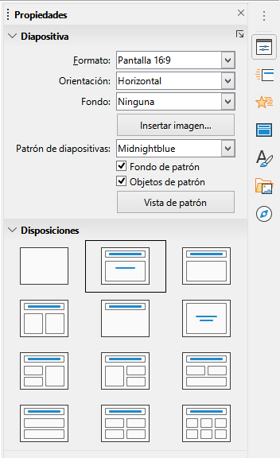
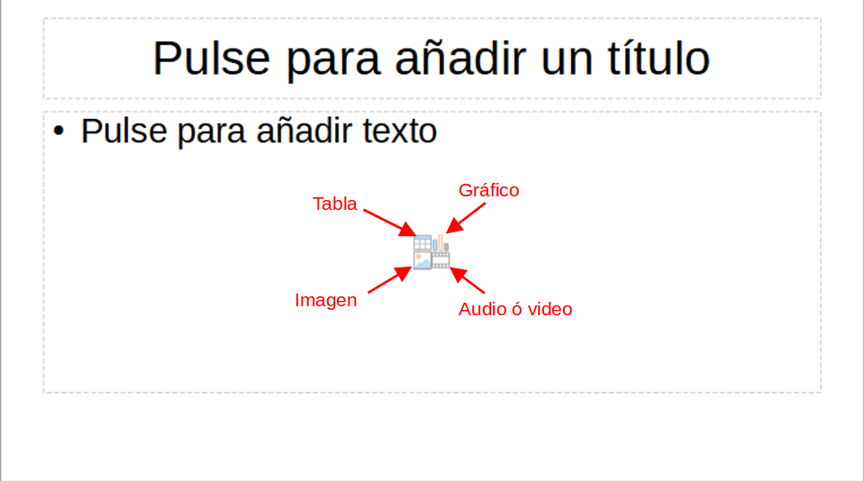
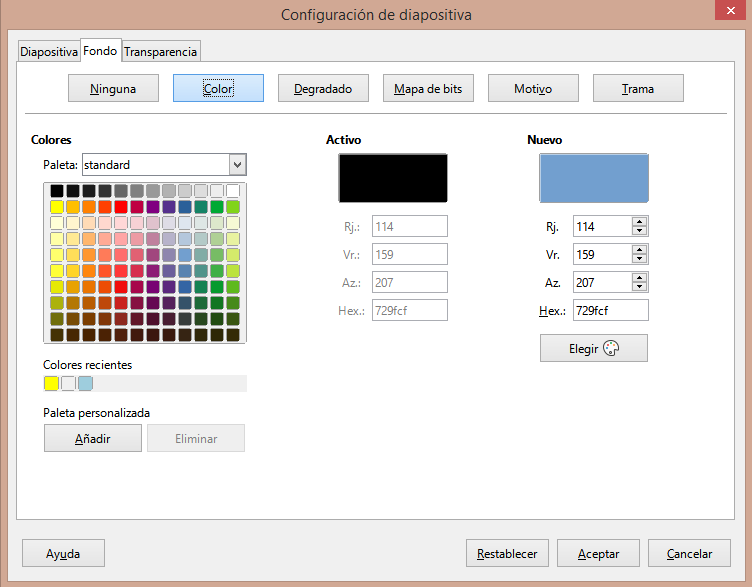
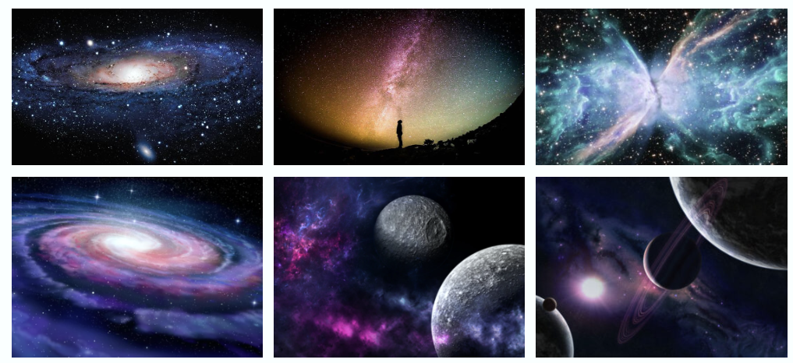
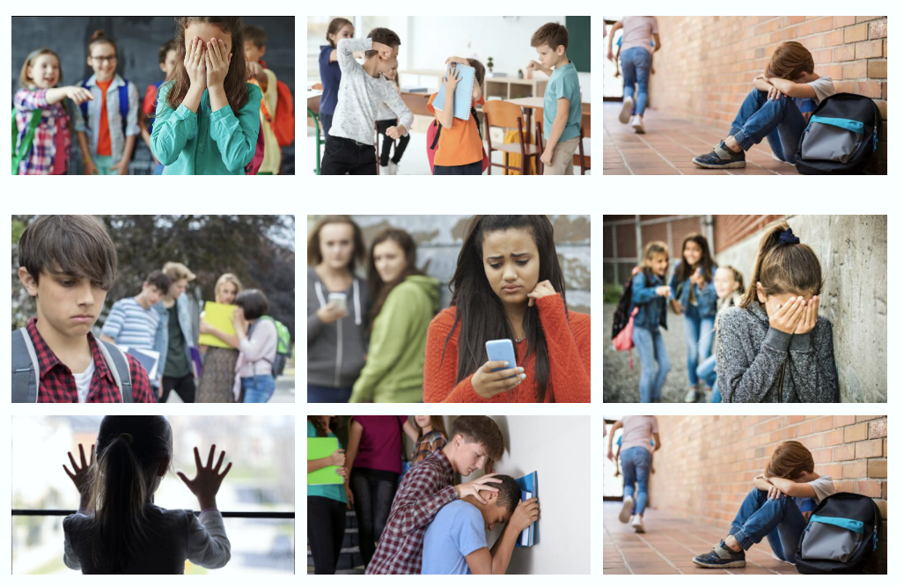

Desarrollar presentaciones¶
Desarrollar presentaciones¶
De forma predeterminada, Impress se abre con el cuadro de diálogo Seleccionar una plantilla, donde podéis elegir una para vuestra presentación.
Si queréis crear una nueva presentación sin usar plantilla, haced clic en Cancelar y se abrirá una diapositiva en blanco en el área de trabajo y en el panel de diapositivas.
Nueva presentación¶
Cuando creáis una nueva presentación, Impress muestra solo una diapositiva en el panel de diapositivas y en el área de trabajo.
Podéis agregar nuevas diapositivas o duplicarlas fácilmente.
Insertar nueva diapositiva¶
Podéis insertar una nueva diapositiva mediante uno de los siguientes métodos:
- Id a Diapositiva → Diapositiva nueva en la barra de menú.
- Haced clic con el botón derecho en el panel de diapositivas y seleccionad Diapositiva nueva.
- Usad el atajo de teclado Ctrl + M.
- En la vista Organizador de diapositivas, haced clic con el botón derecho y seleccionad Diapositiva nueva.
- Pulsad el icono Diapositiva nueva en la barra de herramientas de Presentación.
Duplicar diapositiva¶
Para duplicar una diapositiva:
- Seleccionad la diapositiva que queréis duplicar.
- Haced clic con el botón derecho y elegid Duplicar diapositiva.
- También podéis ir a Diapositiva → Duplicar diapositiva o usar el icono correspondiente en la barra de herramientas.

Formato de diapositiva¶
En la Barra lateral, abrid la sección Propiedades → Diapositiva para ver las opciones de formato.
Desde ahí podéis aplicar un fondo, elegir una diapositiva maestra o cambiar el diseño.
Las disposiciones de diapositiva van desde una diapositiva en blanco hasta otras con varios cuadros de contenido.
La primera diapositiva suele ser de tipo Título o Título y subtítulo, y las siguientes normalmente usan el diseño Título y contenido.
⚠️ Para ver el nombre de cada disposición, colocad el cursor sobre los iconos de diseño: aparecerá una etiqueta con su nombre.
Seleccionar o cambiar diseño de diapositiva¶
Después de seleccionar una diapositiva, podéis cambiar su diseño de varias formas:
- En la Barra lateral → Propiedades → Disposiciones.
- En el menú Diapositiva → Disposición.
- Haciendo clic derecho en el panel de diapositivas → Disposición.
- Pulsando el icono Diseño de diapositiva en la barra de herramientas.
⚠️ Si cambiáis el diseño de una diapositiva que ya contiene contenido, este no se pierde, pero puede requerir reajustes de formato.
Contenido de la diapositiva¶
Las distintas disposiciones incluyen cuadros de contenido que pueden contener:
- Título de la diapositiva – Haced clic en “Haga clic para agregar un título” y escribid el texto.
- Texto – Haced clic en “Haga clic para agregar texto” y escribid el contenido.
- Tabla – Insertad una tabla indicando número de filas y columnas.
- Gráfico – Insertad un gráfico y seleccionad su tipo desde la barra lateral.
- Imagen – Insertad una imagen desde un archivo y ajustad su tamaño o posición.
- Audio o vídeo – Insertad un archivo multimedia desde vuestro equipo.
- Objeto OLE – Insertad un objeto vinculado o incrustado (por ejemplo, una hoja de cálculo).

Modificar elementos de diapositiva¶
Podéis mover, redimensionar o eliminar cualquier elemento de una diapositiva.
Mover un cuadro de contenido¶
- Haced clic en el marco exterior hasta que aparezcan los controladores.
- Arrastrad el cuadro a la nueva posición y soltad.
Cambiar tamaño¶
- Haced clic en el borde del cuadro.
- Arrastrad los controladores de esquina o laterales para modificar ancho y alto.
Eliminar un elemento¶
- Seleccionad el cuadro o elemento.
- Pulsad la tecla Supr o Eliminar.
Añadir texto, imágenes u objetos¶
Podéis añadir texto desde un cuadro de contenido o creando un cuadro de texto desde la barra de herramientas.
Para insertar imágenes, gráficos o tablas, id al menú Insertar y elegid el tipo de elemento.
⚠️ Más información en los capítulos sobre imágenes, objetos gráficos y OLE de la guía de LibreOffice.
Modificar la apariencia de la presentación¶
Podéis cambiar el fondo o los estilos generales de las diapositivas desde la diapositiva maestra.
Esta funciona como una plantilla común que define el fondo, los objetos fijos y el formato del texto.
Para modificarla:
- Haced clic derecho en la diapositiva maestra → Propiedades de diapositiva.
- En la pestaña Fondo, elegid el tipo (color, degradado, textura, etc.).
- Aplicad los cambios con Aceptar.

Cambiar el orden de las diapositivas¶
Arrastrad las diapositivas en el panel de diapositivas o en la vista Organizador hasta la posición deseada.
Ocultar diapositivas¶
Si no queréis eliminarlas, haced clic derecho sobre la diapositiva → Ocultar diapositiva.
Animaciones y transiciones¶
Podéis añadir animaciones a los elementos desde la pestaña Animación y transiciones entre diapositivas desde Transición de diapositivas en la barra lateral.
Estos efectos permiten:
- Definir cómo aparece un objeto (animación).
- Establecer cómo cambia de una diapositiva a otra (transición).
Iniciar una presentación¶
Para ejecutar la presentación:
- F5 → Inicia desde la primera diapositiva.
- Mayús + F5 → Inicia desde la diapositiva actual.
- Para avanzar: clic del ratón, flechas del teclado o barra espaciadora.
- Para salir: Esc.
Durante la proyección, la Consola del presentador muestra en una pantalla adicional:
- La diapositiva actual.
- La siguiente diapositiva.
- Las notas.
- Un temporizador.
Actividad
📝 AA2.27 – Mi primera persentación¶
(C.ESP2 / CE2.3 / IC3-3p)
A continuación, vamos a crear nuestra primera presentación mediante los siguientes pasos:
- Abre LibreOffice Impress.
- En la ventana inicial, selecciona Presentación vacía y pulsa Crear.
- Guarda el archivo desde el menú Archivo → Guardar como... y asígnale un nombre (por ejemplo,
Trabajo1.odp). - En la barra lateral derecha, asegúrate de estar en la pestaña Diapositiva.
- En el apartado Diseño de diapositiva, selecciona la opción Título y contenido (o Título y subtítulo, según la versión).
- En el cuadro de título, escribe:
Trabajo 1 - En el cuadro inferior, escribe:
Este es el primer trabajo - Selecciona el texto inferior y cambia el color de la fuente a amarillo.
- Cambia el tipo de letra a Arial Black.
- Ve al menú Insertar → Nueva diapositiva, o pulsa el botón + sobre la lista de diapositivas.
- En la barra lateral, cambia su Diseño de diapositiva a Vacía para trabajar libremente.
- Haz clic con el botón derecho sobre la miniatura de la segunda diapositiva.
- Elige Propiedades de la diapositiva → Fondo.
- En la sección Relleno, selecciona Color, Degradado o Imagen según prefieras.
- Si deseas usar una plantilla de fondo, selecciona Maestro de diapositivas → Cargar plantilla... y elige un diseño (por ejemplo, Mar glacial).
- En el menú superior, selecciona Insertar → Campo → Número de diapositiva.
- Coloca el número en la parte inferior derecha de la diapositiva.
- En la segunda diapositiva, escribe el título:
Mapa conceptual - Si hay cuadros de texto que no necesites, selecciónalos y pulsa Supr.
- Si no ves la barra de dibujo, actívala desde Ver → Barras de herramientas → Dibujo.
- En la barra inferior, selecciona la herramienta Rectángulo.
- Dibuja tres rectángulos: uno a la izquierda y dos a la derecha (uno debajo del otro).
- Cambia a la herramienta Flecha y dibuja dos flechas que salgan del primer rectángulo hacia los otros dos.
- Haz doble clic en cada rectángulo y escribe:
- Izquierda:
Inicio - Derecha superior:
Opción 1 - Derecha inferior:
Opción 2
- Izquierda:
- Guarda la presentación desde Archivo → Guardar.
- Comprueba que el archivo se guarda con extensión
.odp.
Actividad
📝 AA2.28 – Insertar imágenes, enlaces y objetos¶
(C.ESP2 / CE2.3 / IC3-3p)
- Abre LibreOffice Impress.
- Crea una nueva presentación seleccionando Presentación vacía.
- En la primera diapositiva, aplica la plantilla Mar glacial desde el menú Diseño → Maestro de diapositivas → Cargar plantilla....
- Cambia el diseño de la diapositiva a Título, texto desde la barra lateral.
- Escribe como título:
Enlaces importantes -
Redacta una lista con las siguientes páginas web:
- Aprendemos Tecnología
- Consejería de Educación
- Ministerio de Educación
- Una web de tu elección
-
Accede a la web del instituto y copia su URL.
- Selecciona el texto “IES” en la diapositiva.
- Ve al menú Insertar → Hiperenlace.
- En la ventana emergente, haz clic en Internet.
- Pega la URL en el campo Destino.
- En el campo Texto, escribe:
IES - Haz clic en Aplicar y luego en Cerrar.
- Repite los pasos 7 a 13 para enlazar el resto de las páginas web.
- Verifica que todos los enlaces funcionen correctamente al hacer clic.
- Inserta una nueva diapositiva desde Insertar → Diapositiva.
- Cambia su diseño a Título, texto, clipart.
- Escribe como título:
Teide - En el cuadro de texto a la izquierda, escribe:
El Teide es un volcán situado en la isla de Tenerife con una altura de 3718 m sobre el nivel del mar. Es el pico más alto de España. - Busca una imagen del Teide en Internet.
- Haz doble clic en el área de clipart para insertar la imagen.
- Selecciona la imagen desde tu pc y haz clic en Abrir.
- Inserta otra diapositiva con el mismo diseño para mostrar otro pico o volcán de Canarias.
- Añade el título correspondiente y el texto descriptivo.
- Inserta una cuarta diapositiva con el diseño Página de Título.
- Escribe como título:
Mis vacaciones - Selecciona el borde del cuadro de texto y pulsa Supr para eliminarlo.
- Busca una fotografía de un lugar al que te gustaría ir de vacaciones y guárdala.
- Ve a Insertar → Imagen → A partir de archivo... y selecciona tu fotografía.
- Ajusta el tamaño de la imagen manualmente manteniendo pulsada la tecla Mayúsculas para conservar la proporción.
- Repite la operación en una quinta diapositiva con otra fotografía.
- Guarda el archivo como
Impress02.odpdesde Archivo → Guardar como.... - No envíes el archivo por correo todavía.
Actividad
📝 AA2.29 – Insertar efectos, animaciones y transaciones¶
(C.ESP2 / CE2.3 / IC3-3p)
- Abre el archivo Impress02.odp y selecciona la segunda diapositiva (la del Teide).
- Selecciona el título de la diapositiva.
- En la barra lateral derecha, haz clic en la pestaña Animación.
- Haz clic en Agregar efecto...
- En la nueva ventana, selecciona la pestaña Entrada.
- De la lista de efectos, elige Cuña.
- Para ver cómo queda el efecto, haz clic en el botón Reproducir (▶) que aparece debajo, en la misma columna.
- Ahora selecciona la imagen del Teide y agrega una animación personalizada, pero esta vez selecciona la pestaña Énfasis.
- Elige el efecto Girar.
- En el apartado Velocidad, selecciona Rápido.
- En Cantidad, elige las opciones Dos giros y En el sentido contrario a las agujas del reloj.
- Repite estas operaciones con las siguientes diapositivas, eligiendo efectos de entrada distintos para los títulos y efectos de énfasis distintos para las imágenes.
- Pulsa F5 para ver el resultado.
- Añadir transiciones a las diapositivas: En la barra lateral derecha, selecciona la pestaña Transición de diapositiva.
- De la lista de transiciones, elige Barrido hacia arriba.
- En Velocidad, selecciona Rápida.
- En Sonido, elige Cámara.
- Marca la opción Automáticamente después de... e introduce 5 s.
- Haz clic en Aplicar a todas las diapositivas.
- Automatizar la presentación completa
- Vuelve a la segunda diapositiva.
- Abre nuevamente la pestaña Animación.
- En la parte inferior verás una lista con las animaciones aplicadas.
- Selecciona todas las animaciones de la lista.
- En el apartado Inicio, elige la opción Después de la anterior.
- Pulsa F5 para comprobar que toda la presentación se reproduce automáticamente.
- Guarda el archivo como ' 'odp' desde Archivo → Guardar como....
Actividad
(C.ESP2 / CE2.3 / IC4-30p)
En esta actividad vas a convertirte en creador o creadora de una presentación digital con LibreOffice Impress.
Tu tarea será preparar una exposición sobre el Universo y la Tierra, como si fueses parte del equipo de dos profesores (uno de Geografía y otro de Astronomía) que van a dar una charla conjunta al alumnado del centro.
El objetivo es demostrar que sabes usar Impress para comunicar ideas de forma visual y ordenada, combinando texto, imágenes y efectos.
A continuación, crearás una presentación con varias diapositivas que sigan este orden:
- El Cosmos y el Universo
- La Vía Láctea y el Sistema Solar
- Características de la Tierra
- Origen del Planeta Tierra
- Magnetismo de la Tierra
- Estructura de la Tierra
- Movimientos de la Tierra
- Rotación- Puntos cardinales
- Coordenadas geográficas
- Husos horarios
- Traslación
- Estaciones del año
- Zonas térmicas de la Tierra
- Agradecimiento (incluye tu nombre y grupo)
Para crear una buena presentación, utiliza todo lo que has aprendido sobre Impress:
- Texto: escribe los títulos y el contenido principal con fuente Arial Black, tamaño 36, en negrita.
- Imágenes: busca imágenes en internet que expliquen los temas y cita la fuente en la diapositiva o en las notas.
- Gráficos y formas: usa diagramas o figuras (como círculos, flechas o líneas) para representar ideas o relaciones.
- Transiciones: aplica efectos entre diapositivas (por ejemplo, desvanecer o deslizar) para hacer la presentación más dinámica.
- Animaciones: anima algunos elementos del texto o las imágenes para que aparezcan poco a poco, pero sin abusar.
- Notas: añade notas para ti, con recordatorios de lo que dirías si presentases en público.
- Fondo y estilo: elige un fondo que combine bien con los colores del texto. Evita fondos muy recargados.
- Sonido o vídeo (opcional): si lo deseas, puedes insertar un pequeño vídeo o sonido que complemente el tema.
Recuerda:
- Mantén una estructura ordenada: una idea por diapositiva.
- Usa colores contrastados (texto claro sobre fondo oscuro, o al revés).
- No pongas demasiado texto: elige frases cortas y claras.
- Revisa la ortografía y el tamaño del texto antes de guardar.
- Guarda el archivo con frecuencia para no perder el trabajo.
- Incluye al final una diapositiva de agradecimiento con tu nombre y grupo.

(C.ESP2 / CE2.3 / IC4-30p)
Realizarás una presentación en Impress de 10 diapositivas sobre el bullying o acoso escolar.
Tu objetivo será explicar las causas, los tipos y cómo prevenir o enfrentar el bullying, utilizando los elementos aprendidos en clase.
Puedes ampliar la información si lo necesitas, pero recuerda que se calificará tanto el contenido como el diseño (uso de imágenes, gráficos, animaciones, coherencia y claridad).
-
Qué es
El acoso escolar o bullying es una forma de violencia física o psicológica que sufre un niño o adolescente de manera intencionada y repetida por parte de otro o de un grupo.
El acosador se aprovecha de un desequilibrio de poder para obtener algún beneficio (material o no), mientras que la víctima se siente indefensa y puede llegar a desarrollar trastornos psicológicos o incluso conductas autodestructivas.El bullying puede darse en cualquier espacio escolar: durante el recreo, en los pasillos, en el aula, en los baños, al entrar o salir del centro, o incluso en el entorno digital (ciberacoso).
-
Prevalencia
Es difícil saber cuántos casos exactos de acoso escolar existen, pero los estudios coinciden en que es un problema muy común.
Según la investigadora Covadonga Díaz-Caneja, del Hospital Universitario Gregorio Marañón, entre un 15% y un 50% de los niños y adolescentes han sufrido acoso escolar en algún momento de su vida. -
Causas
Las causas del bullying pueden variar en cada caso, aunque suelen compartir algunos factores:
- Falta de empatía: el acosador no se pone en el lugar de la víctima ni entiende su sufrimiento.
- Problemas familiares o sociales: en muchos casos, el agresor reproduce conductas que observa en su entorno.
- Baja autoestima o necesidad de destacar: algunos acosadores buscan sentirse superiores humillando a otros.
-
Consecuencias
El bullying puede tener efectos muy graves tanto para la víctima como para el agresor y el entorno escolar:
En la víctima: - Ansiedad, depresión o miedo constante.
- Dificultades para concentrarse y bajo rendimiento académico.
- Problemas físicos (dolores, insomnio, pérdida de apetito).
- Aislamiento social o pensamientos autodestructivos en casos extremos.En el agresor: - Normalización de la violencia.
- Conflictos de convivencia y sanciones disciplinarias.
- Dificultades para establecer relaciones sanas en el futuro.En el grupo y la escuela: - Mal clima en el aula.
- Pérdida de confianza y seguridad.
- Indiferencia ante el sufrimiento ajeno.
Tu presentación debe incluir:
- Portada con título, tu nombre y grupo.
- Diapositiva sobre qué es el bullying.
- Diapositiva sobre prevalencia o frecuencia.
- Diapositiva sobre causas.
- Diapositiva sobre tipos de bullying (físico, verbal, social y cibernético).
- Diapositiva sobre consecuencias.
- Diapositiva sobre cómo evitarlo o enfrentarlo.
- Diapositiva con consejos o mensajes positivos.
- Diapositiva con fuente de información.
- Diapositiva de agradecimiento o reflexión final.
Incluye imágenes, gráficos, formas, transiciones y notas del orador.

(C.ESP2 / CE2.3 / IC4-30p)
En los últimos años, los videojuegos se han convertido en una de las formas de entretenimiento más populares entre jóvenes y adultos.
Sin embargo, en algunos casos, el uso excesivo puede transformarse en una adicción que afecta a la salud física, mental y social de la persona.
La adicción a los videojuegos se considera una adicción no tóxica (sin sustancias), dentro del grupo de las adicciones de comportamiento.
Se caracteriza por una necesidad incontrolable de jugar, que provoca ansiedad, estrés o malestar cuando no se puede hacerlo.
Desde 2018, la Organización Mundial de la Salud (OMS) reconoce oficialmente esta adicción como una enfermedad, incluida en la Clasificación Internacional de Enfermedades.
- ¿Cuándo se considera adicción?
Detectar la adicción a los videojuegos es algo psicológico.
Aunque jugar puede ser divertido y estimulante, se convierte en un problema cuando:
- Se pierde el control sobre el tiempo dedicado al juego.
- Se deja de cumplir con las obligaciones diarias (estudio, trabajo, descanso, alimentación).
- Aparece ansiedad, irritabilidad o insomnio al no poder jugar.
- El videojuego se convierte en el centro de la vida del jugador.
Hoy en día, con la expansión de la cultura gaming y los eSports, algunos casos de adicción pueden pasar desapercibidos, ya que se confunden con una “afición intensa” o una práctica profesional.
- Explica con tus propias palabras qué significa “adicción no tóxica”.
- ¿Por qué la OMS considera la adicción a los videojuegos una enfermedad?
- Escribe 3 señales que pueden indicar que alguien está desarrollando una adicción a los videojuegos.
- Menciona 2 consecuencias físicas o psicológicas que puede tener.
- Piensa en tu entorno: ¿crees que esta adicción se da más en adolescentes o también en adultos? Justifica tu respuesta.
- Crea una diapositiva en Impress con:
- Un título claro y un fondo relacionado con el tema.
- Texto breve con ideas principales sobre la adicción a los videojuegos.
- Una imagen o gráfico que refuerce tu mensaje.
- Añade una nota co
| Criterio | Calificación | |||
|---|---|---|---|---|
| Organización del contenido | Presentación no entregada o sin contenido. | Contenido desordenado, sin estructura ni títulos coherentes. | Estructura básica con títulos y subtítulos, aunque con fallos de coherencia o jerarquía. | Presentación clara, con introducción, desarrollo y cierre; títulos y secciones bien definidos. |
| Uso de elementos visuales | No se incluyen imágenes, gráficos o recursos visuales. | Imágenes irrelevantes o sin relación con el contenido. | Uso limitado o desigual de elementos visuales; algunos no aportan al mensaje. | Imágenes, gráficos o tablas relevantes, integrados adecuadamente para reforzar la comunicación. |
| Estética y coherencia visual | Sin criterios estéticos, formato irregular o inconsistente. | Diseño simple con errores de formato o tipografía. | Diseño funcional con cierta coherencia visual, aunque mejorable. | Diseño atractivo, equilibrado y coherente en colores, tipografía y distribución. |
| Calidad técnica y funcionalidad | Presentación con errores técnicos (animaciones, transiciones o enlaces defectuosos). | Archivo funcional pero con formato descuidado o poco profesional. | Presentación correcta con algún detalle técnico mejorable. | Presentación técnicamente correcta, fluida y funcional en todos sus elementos. |
| Originalidad y respeto a derechos | Copia directa de otros trabajos o sin citar fuentes. | Poca creatividad y sin referencias adecuadas. | Uso de ideas propias con errores en la citación o derechos de autor. | Presentación original, creativa y respetuosa con los derechos de autor, citando correctamente las fuentes. |